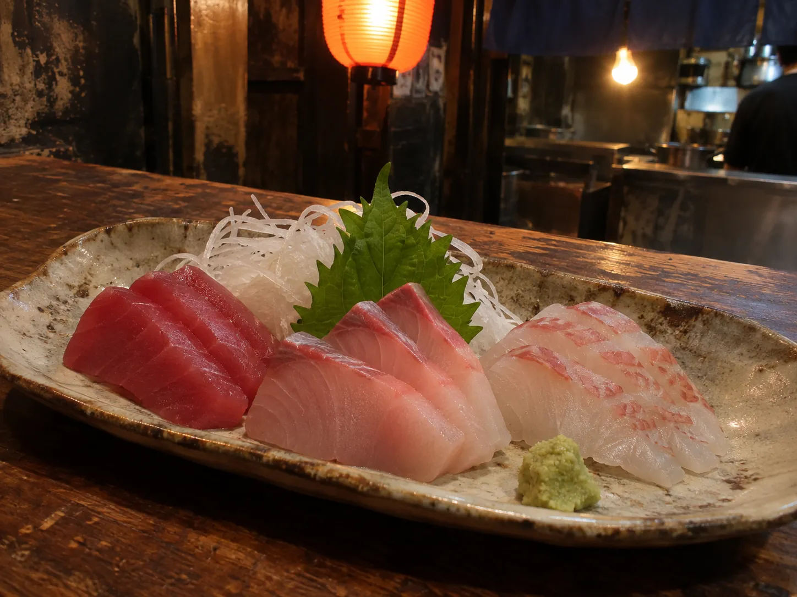
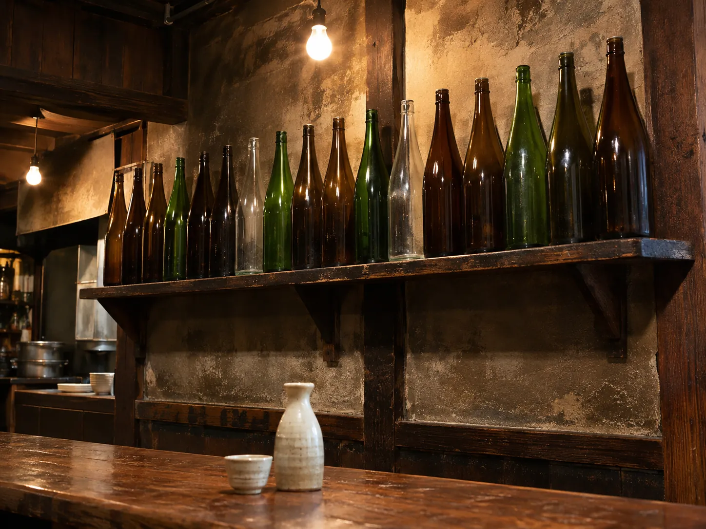
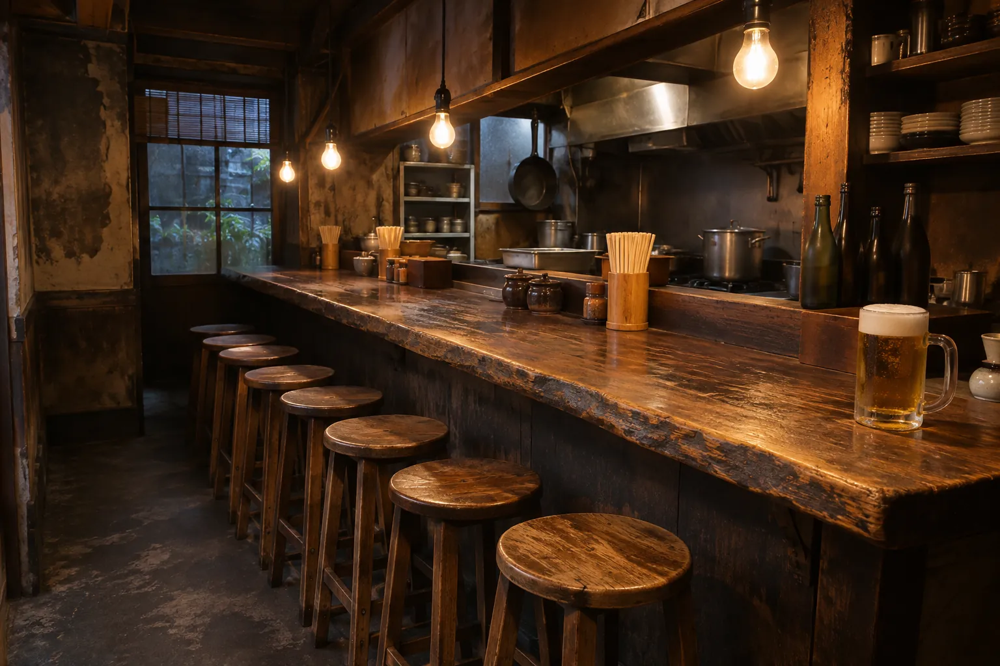

IZAKAYA DAIMATSU
新橋・1978年から
17:00–23:30・日曜祝日休み
お勘定
The bill
先に、お金の話をしておきます。
- お通し¥450 断れます断っても、席料はかかりません。
- 席料・チャージなし
- サービス料なし
- 時価の品なし全部の料理に、値段が書いてあります。
- ひとりの目安¥4,500前後お通し＋料理3〜4品＋飲み物2〜3杯
値段はすべて税込です。
お通し
Otoshi

今月のお通し：切り干し大根の煮物
頼んでいない小鉢が、最初に出てきます。
座るとすぐ、小鉢をひとつお出しします。これが「お通し」で、¥450です。日本の居酒屋では、席料のかわりにこの小鉢を出す習わしがあります。
いらなければ、出てきたときにそう言ってください。下げます。お代はいただきません。
ひとことで伝わりますお通し、いりません。Otōshi, irimasen.
品書き
Menu
全部の料理に値段と、量の目安を書いておきます。
刺身Sashimi
- 本日の刺身 三点盛¥1,8002人前
- 本日の刺身 五点盛¥2,8003〜4人前
- まぐろ赤身¥900
- 〆さば¥800酢で締めた鯖
- たこぶつ¥700

本日の刺身 三点盛（2人前）¥1,800
焼き物Grilled
- 銀だら西京焼¥1,400白味噌に漬けて焼いています
- ほっけ開き¥1,1002人で分けられる大きさ
- あじの開き¥900
- 焼き鳥 5本盛り¥1,200塩かたれ
- つくね¥3001本
- 厚揚げ焼き¥500

焼き物は炭火で焼きます。
揚げ物Fried
- 鶏の唐揚げ¥7005個
- 海老の天ぷら¥9002尾
- ポテトフライ¥500
一品Small plates
- 冷奴¥400
- 枝豆¥400
- 漬物盛り合わせ¥500
- だし巻き玉子¥700
- 肉じゃが豚¥600
- もつ煮込み豚¥650
〆To finish
- 焼きおにぎり¥4002個
- 鯛茶漬け¥800
- 焼きそば豚¥700
飲み物Drinks
- 生ビール（中）¥600
- 瓶ビール¥650
- ハイボール¥550
- レモンサワー／ウーロンハイ¥550
- 焼酎（芋・麦）グラス¥600
- 日本酒 一合（180ml）¥700–1,20015種類
- 梅酒¥600
- ウーロン茶・緑茶¥400
- ノンアルコールビール¥500

日本酒は15種類。一合（180ml）からお出しします。
飲み放題
All-you-can-drink
2時間 ¥2,200
- 上の飲み物を、2時間のあいだ何杯でも頼めます。
- 料理は別料金です。
- 2名から。テーブルの全員でお願いします。
- 最後の注文は、終わる30分前です。
頼み方と払い方
How it works
- 一度に全部頼まなくて大丈夫です。
2〜3品ずつ頼んで、足りなければ足してください。それが普通の頼み方です。
- 一皿は、1〜2人で分ける量です。
刺身の三点盛は2人前です。
- 呼ぶときは、手を挙げて「すみません」。
テーブルに呼び出しのボタンはありません。
- お会計は、席でまとめて。
レジに並ぶ必要はありません。現金・クレジットカード・PayPay が使えます。
食べられないものがある方へ
Dietary notes
- だしに鰹（魚）を使っています。
- ベジタリアン・ヴィーガン向けの料理は、ほとんどお出しできません。
- 豚肉を使う料理には「豚」と書いてあります。
- アレルギーは、注文のときに伝えてください。
時間と場所
Hours & access
- 営業
- 17:00–23:30（料理の注文は23:00まで、飲み物は23:15まで）
- 休み
- 日曜・祝日
- 席
- カウンター8席・テーブル4卓（全24席）。靴は脱ぎません。
- 予約
- 3名までは予約なしでどうぞ。4名以上は電話で予約してください。
- 電話
- +81 3-XXXX-XXXX（架空の番号です）
- たばこ
- 全席禁煙。灰皿は置いていません。
- 住所
- 東京都港区新橋3丁目（架空の住所です）
駅から
- JR 新橋駅（烏森口）徒歩4分
- 都営浅草線 新橋駅（A1出口）徒歩5分
- 東京メトロ銀座線 新橋駅（8番出口）徒歩6分
- 羽田空港から京急線で新橋まで乗り換えなし、約25分

カウンター8席。おひとりでもどうぞ。